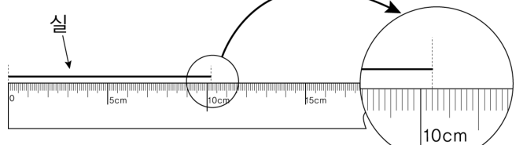
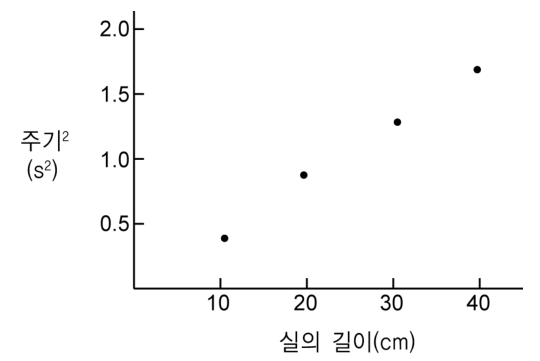
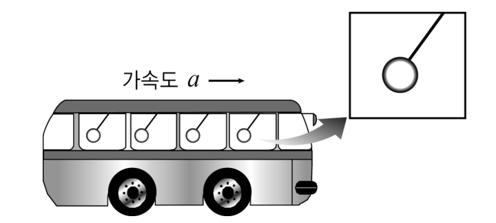
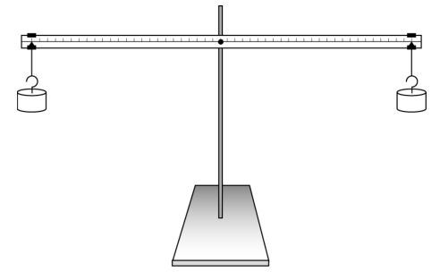

물리교육론 객관식 3문항 — 실험 보고서 분석(유효숫자·자료 변환·외삽)·힘과 운동 서술형 평가·V도Lab report analysis · assessing force-and-motion ideas · Gowin's V diagram
다음은 ‘진자의 길이와 주기 사이의 관계’를 알아보는 실험 보고서의 일부이다.
[실험 과정] ※ 추의 크기는 무시하고, 실의 길이를 진자의 길이로 가정한다.
(1) 그림과 같은 방법으로 실의 길이를 측정하고 유효숫자를 고려하여 기록하였다. — 측정값: 10.2 cm


(2) 세 학생이 진자가 30번 왕복 운동한 시간을 각각 다른 시계를 이용하여 측정하고 그 값을 기록하였다.
| 학생 A | 학생 B | 학생 C | 평균 | |
|---|---|---|---|---|
| 시간(s) | 18 | 18.1 | 18.17 | ⓐ |
(3) 실의 길이를 변화시키면서 주기를 측정하고 표로 정리하였다. (<표> 생략)
(4) 실의 길이와 주기의 제곱과의 관계를 그래프로 나타내었다. (위 오른쪽 그림)
(5) 그래프를 이용하여 진자의 길이와 진자의 주기와의 관계를 구하였다. (이하 생략)
이 실험 보고서에 대한 분석으로 옳은 것을 <보기>에서 모두 고른 것은?
- ㄱ. 과정 (1)에서 실의 길이의 측정값을 유효숫자를 고려하여 바르게 기록하였다.
- ㄴ. 과정 (2)의 ⓐ에 들어갈 평균값은 유효숫자를 고려하면 18이다.
- ㄷ. 실의 길이와 주기의 제곱과의 관계를 그래프로 나타내는 활동의 주된 탐구과정은 ‘자료 변환’이다.
- ㄹ. 외삽(extrapolation)을 이용하면, 실의 길이가 50 cm일 때의 주기를 알 수 있다.
다음은 ‘힘과 운동’에 대한 학생의 생각을 평가하기 위한 서술형 문항이다.
그림은 버스가 지면에 대해 가속도 \(a\)로 등가속도 직선 운동을 하고 있을 때 질량이 \(m\)인 버스 손잡이가 기울어져 있는 모습이다. 지면에 대해 정지한 사람의 관점에서 손잡이에 작용하는 힘을 모두 그리고, 합력의 크기와 방향을 쓰시오. (단, 손잡이 끈의 질량은 무시한다.)

이 문항에 대하여 5명의 학생이 다음과 같이 답하였다. 과학 교사가 이를 평가할 때, 옳게 답한 것으로 평가해야 할 학생은?
다음은 ‘돌림힘(토크, torque)의 평형’에 대한 실험 과정이다.
[과정 1] 같은 질량의 추를 수평 막대 양쪽에 걸어 평형을 이루도록 한다. 평형을 이루었을 때, 막대의 중심으로부터 추까지의 길이를 재고, 추의 질량과 함께 기록한다.

[과정 2] 수평 막대 양쪽에 있는 추의 질량과 위치를 변화시키면서 평형이 되었을 때, 막대의 중심으로부터 추까지의 거리와 추의 질량을 기록한다.
[과정 3] 기록된 데이터로부터 ‘(막대의 중심에서 추까지의 길이)×(추의 무게)’를 구한 다음, 수평 막대 양쪽의 값을 비교한다.
이 실험을 인식론적 V도로 나타내는 과정으로 옳은 것을 <보기>에서 모두 고른 것은?
- ㄱ. ‘초점 질문(focus question)’은 ‘수평 막대에 작용하는 돌림힘의 평형 조건은 무엇일까?’이다.
- ㄴ. 개념적(이론적) 측면의 ‘원리(principle)’는 ‘힘, 돌림힘, 길이, 무게’이다.
- ㄷ. 방법론적 측면의 ‘지식 주장(knowledge claim)’에는 ‘평형이 되었을 때, 막대의 중심에서 추까지의 길이와 추의 무게를 곱한 양은 수평 막대 양쪽의 경우 거의 같다’라는 내용이 포함될 수 있다.
정답문항별 정답 (AI 풀이 ↔ 정답표)
| 문항 | AI 풀이 | 정답표 | 배점 | 판정 | 핵심 아이디어 |
|---|---|---|---|---|---|
| 7 | ⑤ | ⑤ | 2.0 | 일치 ✓ | 최소 눈금(1 mm)의 1/10 어림 → 10.20 cm. 평균은 가장 덜 정밀한 18(정수 자리)에 맞춰 18. 그래프 그리기 = 자료 변환, 범위 밖 = 외삽. |
| 8 | ② | ② | 2.5 | 일치 ✓ | 관성계에서는 실제 힘(장력, 중력)만. 손잡이 가속도 = \(a\) → 합력 \(ma\), 가속도와 같은 방향. |
| 9 | ③ | ③ | 2.0 | 일치 ✓ | 원리 = 개념 사이의 관계에 대한 진술(예: 돌림힘의 합이 0이면 회전 상태가 변하지 않는다). 낱말 목록은 ‘개념’. |
1문항별 풀이 — 선지·보기 분석 포함
7진자 실험 보고서 분석 2.0점
다음은 ‘진자의 길이와 주기 사이의 관계’를 알아보는 실험 보고서의 일부이다.
[실험 과정] ※ 추의 크기는 무시하고, 실의 길이를 진자의 길이로 가정한다.
(1) 그림과 같은 방법으로 실의 길이를 측정하고 유효숫자를 고려하여 기록하였다. — 측정값: 10.2 cm
(2) 세 학생이 진자가 30번 왕복 운동한 시간을 각각 다른 시계를 이용하여 측정하고 그 값을 기록하였다.
| 학생 A | 학생 B | 학생 C | 평균 | |
|---|---|---|---|---|
| 시간(s) | 18 | 18.1 | 18.17 | ⓐ |
(3) 실의 길이를 변화시키면서 주기를 측정하고 표로 정리하였다. (<표> 생략)
(4) 실의 길이와 주기의 제곱과의 관계를 그래프로 나타내었다. (위 오른쪽 그림)
(5) 그래프를 이용하여 진자의 길이와 진자의 주기와의 관계를 구하였다. (이하 생략)
이 실험 보고서에 대한 분석으로 옳은 것을 <보기>에서 모두 고른 것은?
- ㄱ. 과정 (1)에서 실의 길이의 측정값을 유효숫자를 고려하여 바르게 기록하였다.
- ㄴ. 과정 (2)의 ⓐ에 들어갈 평균값은 유효숫자를 고려하면 18이다.
- ㄷ. 실의 길이와 주기의 제곱과의 관계를 그래프로 나타내는 활동의 주된 탐구과정은 ‘자료 변환’이다.
- ㄹ. 외삽(extrapolation)을 이용하면, 실의 길이가 50 cm일 때의 주기를 알 수 있다.
1ㄱ
밀리미터 눈금 자 → 0.1 mm까지 어림: 실 끝이 10 cm 눈금선에 있으면 10.00 cm, 그림의 값은 10.20 cm로 기록해야 한다. 10.2 cm는 유효숫자 하나가 모자람 → 옳지 않음.
2ㄴ
\((18+18.1+18.17)/3=18.09\). 더하기에서는 소수 자릿수가 가장 적은 값(18, 일의 자리)에 맞춘다 → 18. 옳음.
3ㄷ·ㄹ
표를 그래프로 → 자료 변환. 측정 범위 10~40 cm 밖의 50 cm 예측 → 외삽: \(T^2=4\pi^2L/g\approx2.0\ \mathrm{s^2}\). 옳음.
| 선지·보기 | 해설 |
|---|---|
| ㄱ | 10.20 cm로 기록해야 함 (최소 눈금의 1/10) |
| ㄴ | 가장 덜 정밀한 값에 맞춰 18 ✓ |
| ㄷ | 표 → 그래프 = 자료 변환 ✓ |
| ㄹ | 측정 범위 밖 = 외삽 ✓ |
8가속하는 버스의 손잡이 — 서술형 평가 2.5점
다음은 ‘힘과 운동’에 대한 학생의 생각을 평가하기 위한 서술형 문항이다.
그림은 버스가 지면에 대해 가속도 \(a\)로 등가속도 직선 운동을 하고 있을 때 질량이 \(m\)인 버스 손잡이가 기울어져 있는 모습이다. 지면에 대해 정지한 사람의 관점에서 손잡이에 작용하는 힘을 모두 그리고, 합력의 크기와 방향을 쓰시오. (단, 손잡이 끈의 질량은 무시한다.)
이 문항에 대하여 5명의 학생이 다음과 같이 답하였다. 과학 교사가 이를 평가할 때, 옳게 답한 것으로 평가해야 할 학생은?
1힘 그림
지면의 관찰자: 손잡이에 작용하는 힘은 장력 \(\vec T\)(끈 방향)와 중력 \(m\vec g\)뿐. 관성력은 비관성계(버스 안)에서만 도입한다.
2합력
뉴턴 제2법칙: \(\vec F_{\rm net}=m\vec a\) → 크기 \(ma\), 버스 가속도와 같은 방향. \(\tan\theta=a/g\).
| 선지·보기 | 해설 |
|---|---|
| A | 장력을 빠뜨림, 합력 mg — 틀림 |
| B | 장력·중력, 합력 ma, 가속도 방향 ✓ |
| C | 합력 방향을 가속도 반대로 |
| D | 관성력 도입(비관성계 관점) + 합력 0 |
| E | 관성력 포함, 크기·방향 모두 틀림 |
9돌림힘 평형 실험의 V도 2.0점
다음은 ‘돌림힘(토크, torque)의 평형’에 대한 실험 과정이다.
[과정 1] 같은 질량의 추를 수평 막대 양쪽에 걸어 평형을 이루도록 한다. 평형을 이루었을 때, 막대의 중심으로부터 추까지의 길이를 재고, 추의 질량과 함께 기록한다.
[과정 2] 수평 막대 양쪽에 있는 추의 질량과 위치를 변화시키면서 평형이 되었을 때, 막대의 중심으로부터 추까지의 거리와 추의 질량을 기록한다.
[과정 3] 기록된 데이터로부터 ‘(막대의 중심에서 추까지의 길이)×(추의 무게)’를 구한 다음, 수평 막대 양쪽의 값을 비교한다.
이 실험을 인식론적 V도로 나타내는 과정으로 옳은 것을 <보기>에서 모두 고른 것은?
- ㄱ. ‘초점 질문(focus question)’은 ‘수평 막대에 작용하는 돌림힘의 평형 조건은 무엇일까?’이다.
- ㄴ. 개념적(이론적) 측면의 ‘원리(principle)’는 ‘힘, 돌림힘, 길이, 무게’이다.
- ㄷ. 방법론적 측면의 ‘지식 주장(knowledge claim)’에는 ‘평형이 되었을 때, 막대의 중심에서 추까지의 길이와 추의 무게를 곱한 양은 수평 막대 양쪽의 경우 거의 같다’라는 내용이 포함될 수 있다.
1ㄱ
실험이 답하려는 질문 = 돌림힘의 평형 조건 → 초점 질문으로 적절. 옳음.
2ㄴ
‘힘, 돌림힘, 길이, 무게’는 개념(용어)이다. 원리는 개념 사이의 관계 진술 → 옳지 않음.
3ㄷ
기록·변환(길이×무게 계산)을 근거로 한 결론 → 지식 주장. 옳음.
| 선지·보기 | 해설 |
|---|---|
| ㄱ | 초점 질문 ✓ |
| ㄴ | 낱말 목록은 ‘개념’이지 ‘원리’가 아님 |
| ㄷ | 자료 변환에 근거한 지식 주장 ✓ |
2출제 의도·검토
출제 의도
- 7번: 측정과 유효숫자, 자료 변환·외삽 등 통합 탐구 과정. 8번: 관성계에서의 힘 그림(관성력 오개념)과 서술형 채점. 9번: V도 구성 요소의 구분.
검토 의견
3문항별 모의실험 (3개 — 문항마다 하나, 마우스로 돌리기·휠 확대)
73D 모의실험 — 7번 진자의 길이와 주기: 자료 변환과 외삽
83D 모의실험 — 8번 가속하는 버스의 손잡이 (지면 관찰자)
93D 모의실험 — 9번 돌림힘(토크)의 평형
4고등학생 지도 — 고교 교육과정과 잇기
고교 교육과정과의 연결
- 물리학Ⅰ 단진자·측정, 물리학Ⅱ 관성력, 돌림힘의 평형
- 탐구 보고서 작성(유효숫자, 그래프)
고등학생용 변형 문항
- 가속도 2 m/s²로 출발하는 버스의 손잡이가 연직선과 이루는 각을 구하시오.
- 길이 50 cm 진자의 주기를 그래프에서 외삽해 구하고 이론값과 비교하시오.
5수업 활용 안내
수업 흐름 (45분)
- 개별 풀이 (9분) — 문항당 3분
- 측정·유효숫자 (10분) — 7번 그림으로 읽기 연습
- 관성계 vs 비관성계 (12분) — 8번 모의실험
- V도 그리기 (10분) — 9번 실험으로 V도 완성
- 정리 (4분) — 핵심 한 줄
자주 나오는 오개념
- 자를 최소 눈금까지만 읽는다
- 지면에서 본 손잡이에도 관성력이 작용
- 개념의 목록을 ‘원리’라고 쓴다
평가 포인트
- 유효숫자 규칙을 적용하는가
- 관성계에서 실제 힘만 그리는가
- V도 요소를 구분하는가
더 나아가기
진자 실험 자료를 직접 측정해 T²–L 그래프의 기울기로 g를 구하고, 외삽 예측을 실측으로 검증한다.